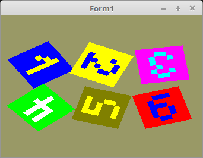

20 - Texturen
65 - Textur Array

Wen man mehrere Texturen im gleichen Format hat, kann man diese in einem einzigen Puffer ablegen.
Dafür gibt es GL_TEXTURE_2D_ARRAY.
Inerhalb des Puffers, sind die Texturen in mehreren Ebenen/Layer gespeichert.
Zur Laufzeit muss man nur mit teilen, welche Layer das verwendet werden soll. Dies geschieht über eine Uniform-Variable.
Eine Textur-Array kann man auch für Multitexturing verwenden. Man muss im Fragment-Shader nur bei texture(... nur den Layer angeben.
Eine andere Anwendung wäre, bei einem 2D-Spiel, Sprites in eine Textur-Array abzulegen.
Die Koordinaten sind gleich, wie bei einer einzelnen Textur.
const
QuadVertex: array[0..5] of TVector3f = // Koordinaten der Polygone.
((-1.0, -1.0, 0.0), (1.0, 1.0, 0.0), (-1.0, 1.0, 0.0),
(-1.0, -1.0, 0.0), (1.0, -1.0, 0.0), (1.0, 1.0, 0.0));
TextureVertex: array[0..5] of TVector2f = // Textur-Koordinaten
((0.0, 0.0), (1.0, 1.0), (0.0, 1.0),
(0.0, 0.0), (1.0, 0.0), (1.0, 1.0));
Dieser Puffer wird gleich reserviert, wie bei der einzelnen Textur.
Im Shader ist der Layer eine Unifom-Variable.
procedure TForm1.CreateScene;
begin
glGenTextures(1, @textureID); // Erzeugen des Textur-Puffer.
Shader := TShader.Create([FileToStr('Vertexshader.glsl'), FileToStr('Fragmentshader.glsl')]);
with Shader do begin
UseProgram;
Matrix_ID := UniformLocation('mat');
Layer_ID := UniformLocation('Layer'); // Die ID für den Layer Zugriff.
glUniform1i(UniformLocation('Sampler'), 0); // Dem Sampler 0 zuweisen.
end;
glGenVertexArrays(1, @VBQuad.VAO);
glGenBuffers(1, @VBQuad.VBOVertex);
glGenBuffers(1, @VBQuad.VBOTex);
Die Ziffern befinde sich alle in einer Bitmap, welche alle Ziffern übereinander beinhaltet.
Man sieht hier gut, das man anstelle von GL_TEXTURE_2D, GL_TEXTURE_2D_ARRAY verwenden muss.
Die Textur-Daten werden mit glTexImage3D(GL_TEXTURE_2D_ARRAY,... übegeben. Neben der Breite und Höhe, muss man noch die Anzahl Layer mitgeben.
Die Höhe muss man noch durch die Anzahl Layer teilen.
procedure TForm1.InitScene;
const
anzLayer = 6;
var
bit: TPicture; // Bitmap
begin
bit := TPicture.Create;
with bit do begin
LoadFromFile('ziffer.xpm'); // Das Images laden.
glBindTexture(GL_TEXTURE_2D_ARRAY, textureID);
glTexImage3D(GL_TEXTURE_2D_ARRAY, 0, GL_RGB, Width, Height div anzLayer, anzLayer, 0, GL_BGR, GL_UNSIGNED_BYTE, Bitmap.RawImage.Data);
glTexParameteri(GL_TEXTURE_2D_ARRAY, GL_TEXTURE_MIN_FILTER, GL_NEAREST);
glTexParameteri(GL_TEXTURE_2D_ARRAY, GL_TEXTURE_MAG_FILTER, GL_NEAREST);
glBindTexture(GL_TEXTURE_2D_ARRAY, 0);
Free; // Bitmap frei geben.
end;
Zeichnen der einzelnen Quadrate. Hier sieht man gut, das nur eine Textur gebunden wird.
Für den Textur-Wechsel muss man nur den Layer übergeben.
Die Matrizen drehen und positionieren nur die Quadrate.
procedure TForm1.ogcDrawScene(Sender: TObject);
var
x, y: integer;
Matrix: TMatrix;
begin
glClear(GL_COLOR_BUFFER_BIT);
Shader.UseProgram;
glBindTexture(GL_TEXTURE_2D_ARRAY, textureID); // Textur binden.
glBindVertexArray(VBQuad.VAO);
for x := 0 to 2 do begin
for y := 0 to 1 do begin
Matrix.Identity;
Matrix.RotateC(x + y * 3 + 1);
Matrix.Scale(0.4);
Matrix.Translate(-1.0 + x, -0.5 + y, 0.0);
Matrix := ScaleMatrix * Matrix;
Matrix.Uniform(Matrix_ID);
glUniform1i(Layer_ID, x + y * 3); // Layer wechseln
glDrawArrays(GL_TRIANGLES, 0, Length(QuadVertex));
end;
end;
Im Fragment-Shader muss ein 2D-Array-Sampler verwendet werden.
Dieser hat ein 3. Parameter, welcher den Layer enthält.
Ansonsten ist der Shader sehr einfach.
Vertex-Shader:
#version 330
layout (location = 0) in vec3 inPos; // Vertex-Koordinaten
layout (location = 10) in vec2 inUV; // Textur-Koordinaten
uniform mat4 mat;
out vec2 UV0;
void main(void)
{
gl_Position = mat * vec4(inPos, 1.0);
UV0 = inUV; // Textur-Koordinaten weiterleiten.
}
Fragment-Shader:
#version 330
in vec2 UV0;
uniform sampler2DArray Sampler;
uniform int Layer;
out vec4 FragColor;
void main()
{
FragColor = texture( Sampler, vec3(UV0, Layer));
}
ziffer.xpm:
/* XPM */
static char *ziffer_xpm[] = {
/* width height num_colors chars_per_pixel */
" 8 48 16 1",
/* colors */
"` c #000000", ". c #800000", "# c #008000", "a c #808000",
"b c #000080", "c c #800080", "d c #008080", "e c #808080",
"f c #c0c0c0", "g c #ff0000", "h c #00ff00", "i c #ffff00",
"j c #0000ff", "k c #ff00ff", "l c #00ffff", "m c #ffffff",
/* pixels */
"jjjjjjjj", "jjjjijjj", "jjjiijjj", "jjijijjj", "jjjjijjj", "jjjjijjj", "jjjjijjj", "jjjjjjjj",
"iiiiiiii", "iiijjiii", "iijiijii", "iiiiijii", "iiiijiii", "iiijiiii", "iijjjjii", "iiiiiiii",
"kkkkkkkk", "kkkllkkk", "kklkklkk", "kkkklkkk", "kkkkklkk", "kklkklkk", "kkkllkkk", "kkkkkkkk",
"hhhhhhhh", "hhmhmhhh", "hhmhmhhh", "hhmhmhhh", "hhmmmmhh", "hhhhmhhh", "hhhhmhhh", "hhhhhhhh",
"aaaaaaaa", "aaiiiiaa", "aaiaaaaa", "aaiiiaaa", "aaaaaiaa", "aaaaaiaa", "aaiiiaaa", "aaaaaaaa",
"gggggggg", "gggjjjgg", "ggjggggg", "ggjjjggg", "ggjggjgg", "ggjggjgg", "gggjjggg", "gggggggg"
};